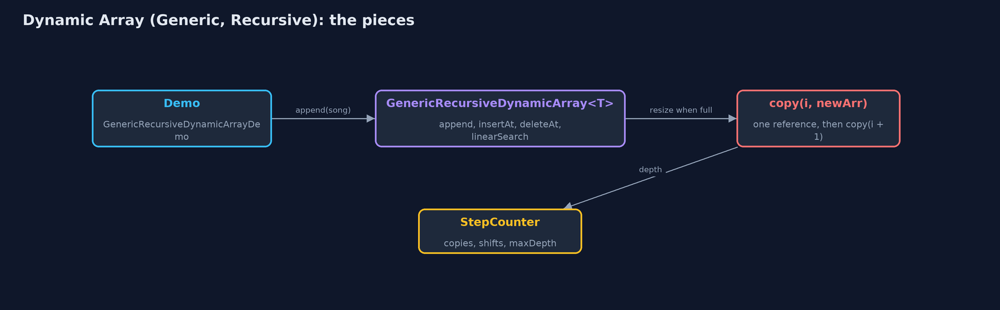
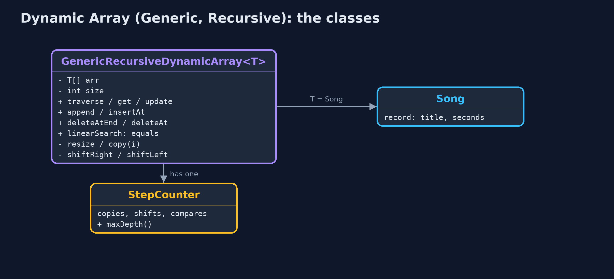
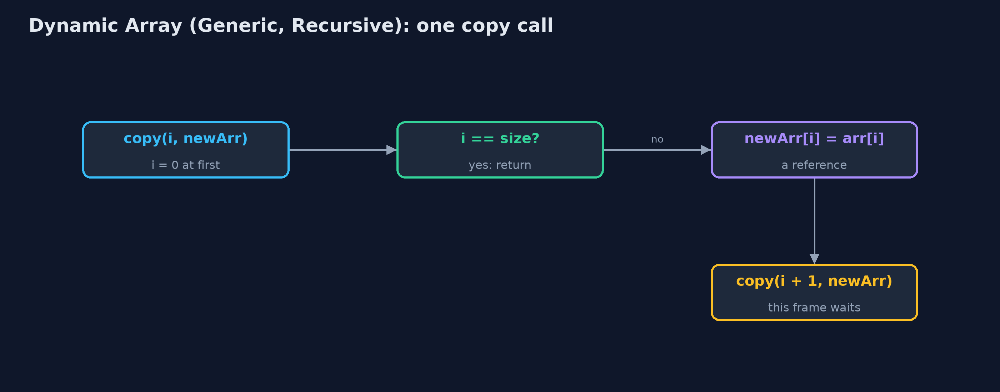
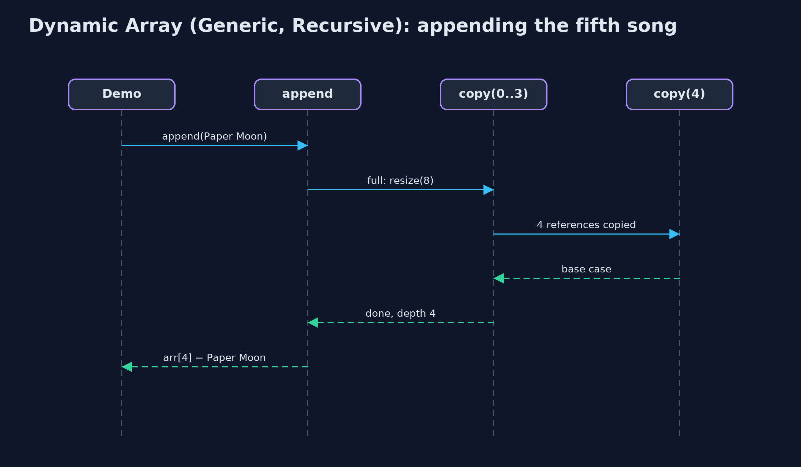

Dynamic Array (Generic, Recursive)
The generic recursive dynamic array holds references to any type T, doubles when full and halves when a quarter full, finds elements with equals, and does every linear pass, including the copy inside a resize, as a recursion: the time is unchanged, the extra space is one frame per element, and a large resize overflows the stack.

A recursive resize copies references: copy(0) ... copy(3), then the base case copy(4)
This project combines the two variations of the dynamic array. Like dynamic-array-generic, it has a type parameter T, stores references on an Object[] cast to T[], and finds elements with **equals**; T may be any type. Like dynamic-array-recursive, every linear pass is a recursion with a base case: traversal, linear search, the shifts of insertion and deletion, and the copy inside a resize. The time of every operation is the same as the plain dynamic array. The extra space is the recursion depth: one call-stack frame per element visited, shifted or copied, so a large enough resize overflows the call stack.
New to data structures? Read Start here first: it explains memory, references and counting steps in ten minutes.
The everyday idea
Picture a warehouse list of addresses being copied onto a sheet twice as long by a line of helpers. The first helper copies line 0 and asks the next helper to copy the rest, then waits. Each helper copies one address and waits for the others. The furniture never moves; only addresses are copied. When a helper finds no lines left, everyone can go home. A list of a million lines would need a million helpers waiting in the corridor at once.
The worked example: A playlist of Song records, with every loop written as a recursion
The playlist of Song records, each a title and a length in seconds, grows from four places. The demo traces the recursive copy of references when the fifth song arrives, grows to nine songs, uses the same class for a list of play counts, inserts and deletes in the middle, searches for a separately made Song with a recursive equals search, shrinks to fit, and finally tries a million appends.
Why it exists
Every recursive, generic structure later in the course, from linked lists to trees, combines these two ideas: a type parameter for the element, and a method that handles one element and calls itself for the rest. The dynamic array is the simplest place to see them together, and it carries a warning that applies everywhere: a linear recursion hidden inside a routine operation, such as the copy in a resize, becomes a crash as the data grows.
New words
| Word | What it means here |
|---|---|
| type parameter T | The element type, filled in at each use: GenericRecursiveDynamicArray<Song>. |
| reference | What each place holds: the address of an object. A resize copies references, not objects. |
| equals | How elements are compared: by contents. A record's equals compares its fields. |
| base case | The call that returns without calling again: i == size, nothing left. |
| recursion depth | The most frames on the call stack at once: n for a resize of n references. |
What you will see, act by act
Run the demo and it tells the story in 5 acts, printing the real numbers that the tests check:
./gradlew run| Act | What it shows |
|---|---|
| 1. A recursive copy of references | The fifth Song resizes the array: copy(0) to copy(3) each copy one reference, copy(4) is the base case; 4 references at depth 4, and index 0 is still the same Song. |
| 2. Growing, and any type | Nine songs take 2 resizes and 12 reference copies, the deepest 8 frames; the same class holds Integers, traversed at depth 5. |
| 3. The middle, and equals, recursively | insertAt(0, Intro) 9 shifts at depth 9; deleteAt(5) 4 shifts at depth 4; a new Song("Echoes", 201) is found at index 6 with 7 recursive equals calls. |
| 4. Shrinking, recursively | deleteAtEnd removes Last Train and nulls its place; shrinkToFit copies 8 references at depth 8 into exactly 8 places. |
| 5. The limit of recursion | A million appends throw StackOverflowError inside a resize, long before the end. |
Each act is drawn step by step in the explained walkthrough and in the animation.
The operations, and what they cost
Time is given for the best, average and worst case in Big-O notation (START-HERE.md explains it by counting steps); the last column is what the demo actually counted, so every formula can be checked against a real number.
| Operation | What it does | Time: best / average / worst | Extra space (call stack) | Same operation as a loop | Steps counted in the demo |
|---|---|---|---|---|---|
| Traverse | Visit arr[i], then traverse from i + 1 | O(n) / O(n) / O(n) | O(n) | O(1) | depth 5 for 5 play counts |
Access get(i) / update | One address calculation (not recursive) | O(1) / O(1) / O(1) | O(1) | O(1) | 1 step |
Insert at end append(x) | Write arr[size]; recursive resize first when full | O(1) / O(1) amortised / O(n) when it resizes | O(1), or O(n) during a resize | O(1), plus the new array | 4 references at depth 4; 12 over 9 appends |
Insert insertAt(pos, x) | shiftRight from the last element down to pos | O(1) at the end / O(n) / O(n) at the front | O(n - pos) | O(1) | 9 shifts at depth 9 |
Delete deleteAt(pos) | shiftLeft from pos, clear the freed place | O(1) at the end / O(n) / O(n) at the front | O(n - pos) | O(1) | 4 shifts at depth 4 |
Delete at end deleteAtEnd() | Clear arr[size-1]; recursive halving when a quarter full | O(1) / O(1) amortised / O(n) when it shrinks | O(1), or O(n) during a shrink | O(1) | 0 shifts |
| Linear search | arr[i].equals(key)? If not, search from i + 1 | O(1) / O(n) / O(n) | O(n) | O(1) | 7 equals calls at depth 7 |
| Shrink to fit | Recursive copy into exactly size places | O(n) / O(n) / O(n) | O(n) | O(1), plus the new array | 8 references at depth 8 |
Extra space is the memory an operation needs besides the structure itself. A loop needs a fixed amount, O(1); a recursive operation needs one call-stack frame for every call still waiting, so its extra space is the depth of the recursion.
The operations in code
Resize with a recursive copy of references
/** Allocates a new array and copies the references into it recursively. O(n) time and stack. */
private void resize(int newCapacity) {
T[] newArr = newArray(newCapacity);
copy(0, newArr);
arr = newArr;
resizes++;
}
private void copy(int i, T[] newArr) {
if (i == size) { // base case: every element copied
return;
}
steps.enter();
newArr[i] = arr[i];
steps.copy();
copy(i + 1, newArr);
steps.exit();
}newArray makes the T[] from an Object[]. copy(i, newArr) copies one reference and calls itself for i + 1, until the base case i == size. The objects are not copied: after the resize, every element is still the same object.
Linear search with equals
/** Linear search with {@code equals}: is the key at i? If not, search from i + 1. O(n) time, O(n) stack. */
public int linearSearch(T key) {
return linearSearch(key, 0);
}
private int linearSearch(T key, int i) {
if (i == size) {
return -1; // base case: searched everything
}
steps.enter();
steps.compare();
int result = arr[i].equals(key) ? i : linearSearch(key, i + 1);
steps.exit();
return result;
}Two base cases: no elements left, and a match found with equals. A separately made Song with the same title and length is found, because a record's equals compares fields.
Deletion at a position
/**
* Deletion at {@code pos}: shiftLeft from pos to the end, then clear the freed place.
*
* @throws IllegalStateException "underflow" when the array is empty
*/
public T deleteAt(int pos) {
if (isEmpty()) {
throw new IllegalStateException("underflow: the array is empty");
}
checkIndex(pos);
T deleted = arr[pos];
shiftLeft(pos);
arr[size - 1] = null;
size--;
shrinkIfQuarterFull();
return deleted;
}
private void shiftLeft(int i) {
if (i >= size - 1) { // base case: reached the last element
return;
}
steps.enter();
arr[i] = arr[i + 1];
steps.shift();
shiftLeft(i + 1);
steps.exit();
}shiftLeft moves one reference and recurses on i + 1. Afterwards the freed place is set to null, so the deleted object can be garbage-collected.
Compared with related structures
The four dynamic-array projects side by side (n elements):
| Property | Generic, recursive (this) | Generic, loops | String, recursive | String, loops |
|---|---|---|---|---|
| Element types | any T | any T | String | String |
| Append | O(1) amortised; resize O(n) stack | O(1) amortised | O(1) amortised; resize O(n) stack | O(1) amortised |
| Insert / delete at front | O(n), O(n) stack | O(n), O(1) extra | O(n), O(n) stack | O(n), O(1) extra |
| Linear search | equals, O(n) stack | equals, O(1) extra | equals, O(n) stack | equals, O(1) extra |
| A million appends | StackOverflowError | fine | StackOverflowError | fine |
The code
src/main/java/com/jk/explore/dynamicarraygenericrecursive/
├── GenericRecursiveDynamicArray.java A dynamic array (a resizable array) of any element type {@code T}, whose operations are written recursively
├── GenericRecursiveDynamicArrayDemo.java Tells the story of the generic, recursive dynamic array in five acts, printing the real counts and the real depth of every recursion
├── Lines.java The demo's printed lines, kept in one {@code StringBuilder} so the tests can check them
├── Song.java One song in the playlist: a type of our own, to show that the generic dynamic array holds any type
└── StepCounter.java Counts what an array operation costs, so the demo prints real numbers instead of claims: element reads and writes, comparisons, shifts (moving an element to the next position), swaps, copies into a new array, and the deepest recursion reached (the most call-stack frames alive at once, which is the extra space a recursive version uses)Test
./gradlew test23 tests in DemoRunsTest, GenericRecursiveDynamicArrayTest. Every number the demo prints is asserted, and nothing depends on the clock, so every run gives the same result.
Common mistakes
| The mistake | What goes wrong | The fix |
|---|---|---|
Writing new T[capacity] | It does not compile: T is not known when the program runs. | (T[]) new Object[capacity], kept inside the class. |
Searching with == | An equal object made elsewhere is not found. | Compare with equals. |
| A recursive copy inside resize | An ordinary append overflows the call stack once the array is large. | Keep hidden linear work as a loop; recurse only where the depth is small. |
| Not clearing freed places | Deleted objects stay referenced and are never freed. | Set every place that falls out of use to null. |
Try it yourself
- Easy. Write a recursive
boolean contains(T key, int i). What are its two base cases? - Medium. Write a recursive
int count(T key, int i)that counts the elements equal tokey. How deep does it go on the 9-song playlist, whatever the key? - Harder. Rewrite the recursive
copyso that its depth is O(log n): copy the middle reference, then the left half and the right half by recursive calls. Why is the time still O(n)?
The answers are in docs/exercises.md, below the questions, so they are not given away.
When to use it
- Learning how generics and recursion combine, on a structure you already know.
- Small lists, where the recursion depth stays low.
When not to
- Any list that may grow large: a recursive resize overflows the call stack. Use
dynamic-array-generic, orArrayList<E>. - Performance-sensitive code: each call costs a frame, a jump and a return.
Where you have already met this
dynamic-array-generic: the same class with loops; Java'sArrayList<E>.dynamic-array-recursive: the same recursions, for strings only.StackOverflowErrorfrom a method that called itself too deeply.
Technologies and versions
| Technology | Version | Used for |
|---|---|---|
| Java | 25 | the code (toolchain set in build.gradle; Gradle fetches JDK 25 if it is missing) |
| Gradle | 9.8.0 (wrapper) | build and run, nothing to install |
| JUnit | 6.1.3 | the tests |
| videokit | course tool | the narrated video and animation: Piper en_US-amy-medium, speed 0.8, longer pauses (the amy-slow voice) |
Learning material
| Document | What it is for |
|---|---|
| Start here | the ideas every project relies on |
| Problem statement | the situation and what the project must show |
| Prerequisites | what you need to know first |
| Dynamic Array (Generic, Recursive), explained | every act, picture by picture |
| Animated walkthrough | the structure changing step by step, narrated |
| Cheat sheet | the whole structure on one page |
| Exercises and answers | practice, easy to harder |
| Session guide | a one-hour lesson |
| Specification | what this project must be true of |
How the pieces fit
Appending to a full array starts a recursive copy of references into a new T[].

The classes
Public operations, and the private recursive helpers they start.

How the data moves
Base case first; otherwise copy one reference and call on the rest.

Who calls whom, in order
The append triggers a resize whose recursive copy goes four calls deep.

Video
video/dynamic-array-generic-recursive-explained.mp4 (with .m4a audio and .srt subtitles) is built by video/build_video.sh. Rendered media is not committed.
Where this sits
Part of the data structures course, in arrays-and-lists.